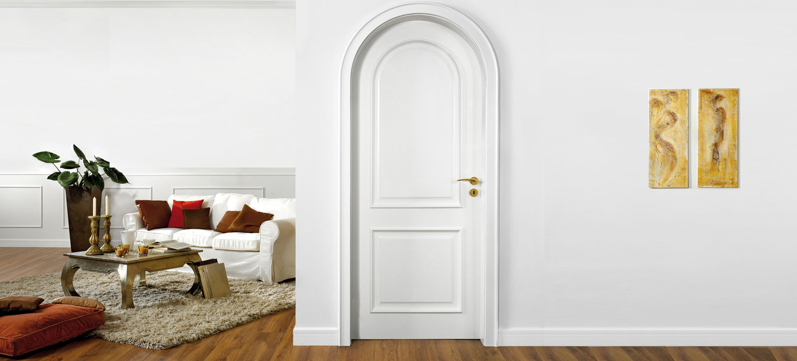

<div class="title-container">
    
</div>

<mat-drawer-container class="example-container">
    <!-- Left sidebar -->
    <mat-drawer mode="side" opened>
        <mat-nav-list>
            <mat-list>
                <mat-list-item>
                    Uși
                    <button mat-button mat-icon-button (click)="changeSubmenuDoorsState()">
                        <mat-icon class="menu-button" [ngClass]="{'rotated' : getSubmenuDoorsState()}">expand_more
                        </mat-icon>
                    </button>
                </mat-list-item>
                <div class="submenu" [ngClass]="{'expanded' : getSubmenuDoorsState()}">
                    <mat-list>
                        <mat-list-item (click)="changeSelectionType('simple')">
                            Simple
                            <button mat-button mat-icon-button (click)="changeSimpleDoorsState()">
                                <mat-icon class="menu-button" [ngClass]="{'rotated' : getSimpleDoorsState()}">
                                    expand_more</mat-icon>
                            </button>
                        </mat-list-item>
                        <div class="submenu" [ngClass]="{'expanded' : getSimpleDoorsState()}">
                            <mat-list-item (click)="changeSelectionType('church')">Bisericesti</mat-list-item>
                            <mat-list-item (click)="changeSelectionType('children')">Copii</mat-list-item>
                            <mat-list-item (click)="changeSelectionType('flowers')">Florale</mat-list-item>
                            <mat-list-item (click)="changeSelectionType('salon')">Salon</mat-list-item>
                        </div>
                    </mat-list>
                    <mat-list-item (click)="changeSelectionType('double')">Duble</mat-list-item>
                </div>
            </mat-list>
            <a mat-list-item>
                <span matLine (click)="changeSelectionType('glass')">Sticlă</span>
            </a>
            <a mat-list-item>
                <span matLine (click)="changeSelectionType('mirrors')">Oglinzi</span>
            </a>
            <a mat-list-item>
                <span matLine (click)="changeSelectionType('edge')">Colțare</span>
            </a>
        </mat-nav-list>
    </mat-drawer>

    <!-- Right sidebar -->
    <mat-drawer-content>
        <div class="container">
            <ng-container *ngIf="isSimpleDoorType();">
                <mat-card class="card" *ngFor="let poza of allImages">
                    <mat-card-content>
                        
                    </mat-card-content>
                </mat-card>
                <div class="row" align="center" style="justify-content: center;">
                    <mat-paginator [length]="150" [pageSize]="pageSize" [pageIndex]="pageIndex"
                        [pageSizeOptions]="[25, 50, 100, 125, 150]" (page)="getPageNumber($event)">
                    </mat-paginator>
                </div>
            </ng-container>

            <ng-container *ngIf="isChurchDoorType();">
                <mat-card class="card" *ngFor="let poza of usiBisericesti">
                    <mat-card-content>
                        
                    </mat-card-content>
                </mat-card>
            </ng-container>

            <ng-container *ngIf="isChildrenDoorType();">
                <mat-card class="card" *ngFor="let poza of usiCopii">
                    <mat-card-content>
                        
                    </mat-card-content>
                </mat-card>
            </ng-container>

            <ng-container *ngIf="isFlowersDoorType();">
                <mat-card class="card" *ngFor="let poza of usiFlorale">
                    <mat-card-content>
                        
                    </mat-card-content>
                </mat-card>
            </ng-container>

            <ng-container *ngIf="isSalonDoorType();">
                <mat-card class="card" *ngFor="let poza of usiSalon">
                    <mat-card-content>
                        
                    </mat-card-content>
                </mat-card>
            </ng-container>

            <ng-container *ngIf="isDoubleDoorType();">
                <mat-card class="doublecard" *ngFor="let poza of usiDublePoze">
                    <mat-card-content>
                        
                    </mat-card-content>
                </mat-card>
            </ng-container>

            <ng-container *ngIf="isMirrorType();">
                
            </ng-container>

            <ng-container *ngIf="isEdgeType();">
                
            </ng-container>

            <ng-container *ngIf="isGlassType();">
                
                <!-- <mat-card class="card" *ngFor="let poza of sticla">
                    <mat-card-content>
                        
                    </mat-card-content>
                </mat-card> -->
            </ng-container>

        </div>
    </mat-drawer-content>
</mat-drawer-container>